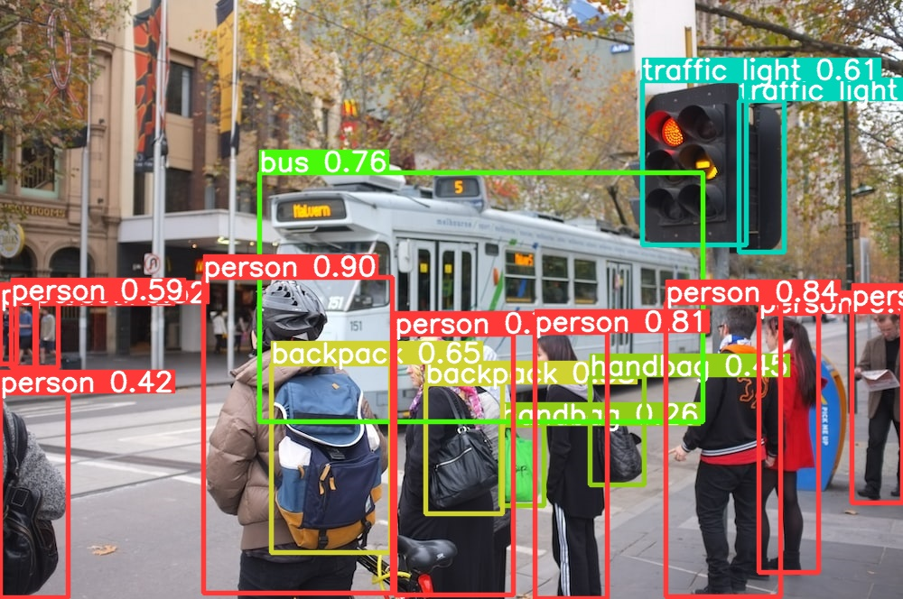
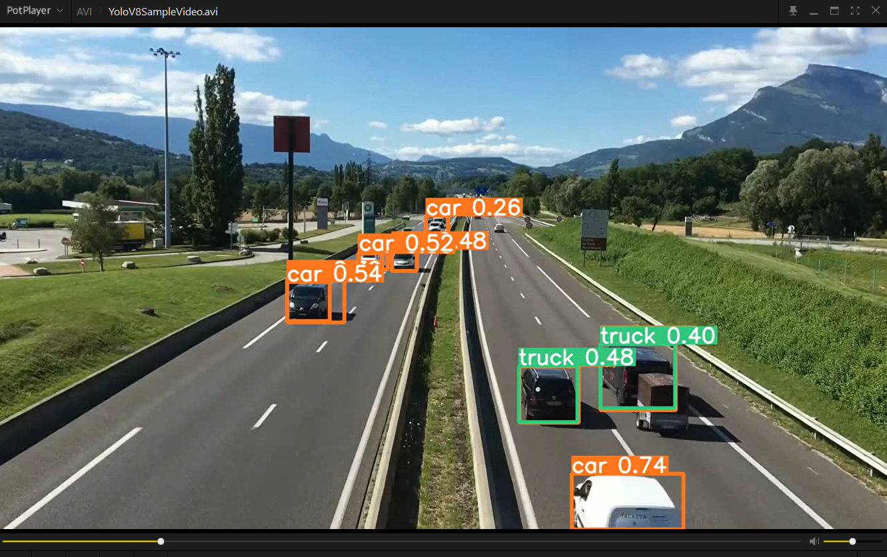

2. Create Environment
conda create -n YoloV8 -yChannels:
- defaults
Platform: win-64
Collecting package metadata (repodata.json): done
Solving environment: done
## Package Plan ##
environment location: D:\Install\Dev\Conda\envs\YoloV8
Preparing transaction: done
Verifying transaction: done
Executing transaction: done
#
# To activate this environment, use
#
# $ conda activate YoloV8
#
# To deactivate an active environment, use
#
# $ conda deactivate3. Activate Environment
conda activate YoloV8
conda install jupyter ipykernel numpy pandas matplotlib -y
# 安装失败可打开新的终端，激活YoloV8后再次安装
python -m ipykernel install --user --name=YoloV8 --display-name="Python YoloV8"4. Install Yolo V8
conda install -c conda-forge ultralytics= -yChannels:
- conda-forge
- defaults
Platform: win-64
Collecting package metadata (repodata.json): done
Solving environment: done
## Package Plan ##
environment location: D:\Install\Dev\Conda\envs\YoloV8
added / updated specs:
- ultralytics
The following packages will be downloaded:
package | build
---------------------------|-----------------
brotli-python-1.1.0 | py312h53d5487_1 315 KB conda-forge
contourpy-1.2.1 | py312h0d7def4_0 202 KB conda-forge
fonttools-4.53.0 | py312h4389bb4_0 2.3 MB conda-forge
kiwisolver-1.4.5 | py312h0d7def4_1 54 KB conda-forge
libopencv-4.9.0 |qt6_py312h5b8f1c0_615 31.4 MB conda-forge
matplotlib-base-3.8.4 | py312hfee7060_2 7.4 MB conda-forge
numpy-1.26.4 | py312h8753938_0 6.2 MB conda-forge
opencv-4.9.0 |qt6_py312hfab33ed_615 55 KB conda-forge
pandas-2.2.2 | py312h72972c8_1 13.5 MB conda-forge
pillow-10.3.0 | py312h6f6a607_0 40.5 MB conda-forge
pip-24.0 | pyhd8ed1ab_0 1.3 MB conda-forge
psutil-5.9.8 | py312he70551f_0 492 KB conda-forge
py-opencv-4.9.0 |qt6_py312hb11cbc4_615 1.1 MB conda-forge
python-3.12.3 |h2628c8c_0_cpython 15.4 MB conda-forge
python_abi-3.12 | 4_cp312 7 KB conda-forge
pyyaml-6.0.1 | py312he70551f_1 164 KB conda-forge
scipy-1.13.1 | py312h1f4e10d_0 14.8 MB conda-forge
setuptools-70.0.0 | pyhd8ed1ab_0 472 KB conda-forge
statsmodels-0.14.2 | py312h1a27103_0 11.0 MB conda-forge
tzdata-2024a | h0c530f3_0 117 KB conda-forge
vc-14.3 | h8a93ad2_20 17 KB conda-forge
wheel-0.43.0 | pyhd8ed1ab_1 57 KB conda-forge
------------------------------------------------------------
Total: 146.9 MB
The following NEW packages will be INSTALLED:
aom conda-forge/win-64::aom-3.9.0-he0c23c2_0
brotli conda-forge/win-64::brotli-1.1.0-hcfcfb64_1
brotli-bin conda-forge/win-64::brotli-bin-1.1.0-hcfcfb64_1
brotli-python conda-forge/win-64::brotli-python-1.1.0-py312h53d5487_1
bzip2 conda-forge/win-64::bzip2-1.0.8-hcfcfb64_5
ca-certificates conda-forge/win-64::ca-certificates-2024.6.2-h56e8100_0
cairo conda-forge/win-64::cairo-1.18.0-h1fef639_0
certifi conda-forge/noarch::certifi-2024.6.2-pyhd8ed1ab_0
charset-normalizer conda-forge/noarch::charset-normalizer-3.3.2-pyhd8ed1ab_0
colorama conda-forge/noarch::colorama-0.4.6-pyhd8ed1ab_0
contourpy conda-forge/win-64::contourpy-1.2.1-py312h0d7def4_0
cycler conda-forge/noarch::cycler-0.12.1-pyhd8ed1ab_0
dav1d conda-forge/win-64::dav1d-1.2.1-hcfcfb64_0
double-conversion conda-forge/win-64::double-conversion-3.3.0-h63175ca_0
expat conda-forge/win-64::expat-2.6.2-h63175ca_0
ffmpeg conda-forge/win-64::ffmpeg-6.1.1-gpl_h7cec250_112
font-ttf-dejavu-s~ conda-forge/noarch::font-ttf-dejavu-sans-mono-2.37-hab24e00_0
font-ttf-inconsol~ conda-forge/noarch::font-ttf-inconsolata-3.000-h77eed37_0
font-ttf-source-c~ conda-forge/noarch::font-ttf-source-code-pro-2.038-h77eed37_0
font-ttf-ubuntu conda-forge/noarch::font-ttf-ubuntu-0.83-h77eed37_2
fontconfig conda-forge/win-64::fontconfig-2.14.2-hbde0cde_0
fonts-conda-ecosy~ conda-forge/noarch::fonts-conda-ecosystem-1-0
fonts-conda-forge conda-forge/noarch::fonts-conda-forge-1-0
fonttools conda-forge/win-64::fonttools-4.53.0-py312h4389bb4_0
freeglut conda-forge/win-64::freeglut-3.2.2-h63175ca_2
freetype conda-forge/win-64::freetype-2.12.1-hdaf720e_2
graphite2 conda-forge/win-64::graphite2-1.3.13-h63175ca_1003
harfbuzz conda-forge/win-64::harfbuzz-8.5.0-h81778c3_0
hdf5 conda-forge/win-64::hdf5-1.14.3-nompi_h2b43c12_105
icu conda-forge/win-64::icu-73.2-h63175ca_0
idna conda-forge/noarch::idna-3.7-pyhd8ed1ab_0
imath conda-forge/win-64::imath-3.1.11-h12be248_0
intel-openmp conda-forge/win-64::intel-openmp-2024.1.0-h57928b3_966
jasper conda-forge/win-64::jasper-4.2.4-hcb1a123_0
khronos-opencl-ic~ conda-forge/win-64::khronos-opencl-icd-loader-2023.04.17-h64bf75a_1
kiwisolver conda-forge/win-64::kiwisolver-1.4.5-py312h0d7def4_1
krb5 conda-forge/win-64::krb5-1.21.2-heb0366b_0
lcms2 conda-forge/win-64::lcms2-2.16-h67d730c_0
lerc conda-forge/win-64::lerc-4.0.0-h63175ca_0
libabseil conda-forge/win-64::libabseil-20240116.2-cxx17_h63175ca_0
libaec conda-forge/win-64::libaec-1.1.3-h63175ca_0
libasprintf conda-forge/win-64::libasprintf-0.22.5-h5728263_2
libblas conda-forge/win-64::libblas-3.9.0-22_win64_mkl
libbrotlicommon conda-forge/win-64::libbrotlicommon-1.1.0-hcfcfb64_1
libbrotlidec conda-forge/win-64::libbrotlidec-1.1.0-hcfcfb64_1
libbrotlienc conda-forge/win-64::libbrotlienc-1.1.0-hcfcfb64_1
libcblas conda-forge/win-64::libcblas-3.9.0-22_win64_mkl
libclang13 conda-forge/win-64::libclang13-18.1.7-default_h97ce8ae_0
libcurl conda-forge/win-64::libcurl-8.8.0-hd5e4a3a_0
libdeflate conda-forge/win-64::libdeflate-1.20-hcfcfb64_0
libexpat conda-forge/win-64::libexpat-2.6.2-h63175ca_0
libffi conda-forge/win-64::libffi-3.4.2-h8ffe710_5
libgettextpo conda-forge/win-64::libgettextpo-0.22.5-h5728263_2
libglib conda-forge/win-64::libglib-2.80.2-h0df6a38_0
libhwloc conda-forge/win-64::libhwloc-2.10.0-default_h8125262_1001
libiconv conda-forge/win-64::libiconv-1.17-hcfcfb64_2
libintl conda-forge/win-64::libintl-0.22.5-h5728263_2
libjpeg-turbo conda-forge/win-64::libjpeg-turbo-3.0.0-hcfcfb64_1
liblapack conda-forge/win-64::liblapack-3.9.0-22_win64_mkl
liblapacke conda-forge/win-64::liblapacke-3.9.0-22_win64_mkl
libopencv conda-forge/win-64::libopencv-4.9.0-qt6_py312h5b8f1c0_615
libopenvino conda-forge/win-64::libopenvino-2024.1.0-hfe1841e_7
libopenvino-auto-~ conda-forge/win-64::libopenvino-auto-batch-plugin-2024.1.0-h04f32e0_7
libopenvino-auto-~ conda-forge/win-64::libopenvino-auto-plugin-2024.1.0-h04f32e0_7
libopenvino-heter~ conda-forge/win-64::libopenvino-hetero-plugin-2024.1.0-h372dad0_7
libopenvino-intel~ conda-forge/win-64::libopenvino-intel-cpu-plugin-2024.1.0-hfe1841e_7
libopenvino-intel~ conda-forge/win-64::libopenvino-intel-gpu-plugin-2024.1.0-hfe1841e_7
libopenvino-ir-fr~ conda-forge/win-64::libopenvino-ir-frontend-2024.1.0-h372dad0_7
libopenvino-onnx-~ conda-forge/win-64::libopenvino-onnx-frontend-2024.1.0-hdeef14f_7
libopenvino-paddl~ conda-forge/win-64::libopenvino-paddle-frontend-2024.1.0-hdeef14f_7
libopenvino-pytor~ conda-forge/win-64::libopenvino-pytorch-frontend-2024.1.0-he0c23c2_7
libopenvino-tenso~ conda-forge/win-64::libopenvino-tensorflow-frontend-2024.1.0-h7c40eac_7
libopenvino-tenso~ conda-forge/win-64::libopenvino-tensorflow-lite-frontend-2024.1.0-he0c23c2_7
libopus conda-forge/win-64::libopus-1.3.1-h8ffe710_1
libpng conda-forge/win-64::libpng-1.6.43-h19919ed_0
libprotobuf conda-forge/win-64::libprotobuf-4.25.3-h503648d_0
libsqlite conda-forge/win-64::libsqlite-3.46.0-h2466b09_0
libssh2 conda-forge/win-64::libssh2-1.11.0-h7dfc565_0
libtiff conda-forge/win-64::libtiff-4.6.0-hddb2be6_3
libwebp-base conda-forge/win-64::libwebp-base-1.4.0-hcfcfb64_0
libxcb conda-forge/win-64::libxcb-1.15-hcd874cb_0
libxml2 conda-forge/win-64::libxml2-2.12.7-h283a6d9_1
libzlib conda-forge/win-64::libzlib-1.3.1-h2466b09_1
m2w64-gcc-libgfor~ conda-forge/win-64::m2w64-gcc-libgfortran-5.3.0-6
m2w64-gcc-libs conda-forge/win-64::m2w64-gcc-libs-5.3.0-7
m2w64-gcc-libs-co~ conda-forge/win-64::m2w64-gcc-libs-core-5.3.0-7
m2w64-gmp conda-forge/win-64::m2w64-gmp-6.1.0-2
m2w64-libwinpthre~ conda-forge/win-64::m2w64-libwinpthread-git-5.0.0.4634.697f757-2
matplotlib-base conda-forge/win-64::matplotlib-base-3.8.4-py312hfee7060_2
mkl conda-forge/win-64::mkl-2024.1.0-h66d3029_692
msys2-conda-epoch conda-forge/win-64::msys2-conda-epoch-20160418-1
munkres conda-forge/noarch::munkres-1.1.4-pyh9f0ad1d_0
numpy conda-forge/win-64::numpy-1.26.4-py312h8753938_0
opencv conda-forge/win-64::opencv-4.9.0-qt6_py312hfab33ed_615
openexr conda-forge/win-64::openexr-3.2.2-h72640d8_1
openh264 conda-forge/win-64::openh264-2.4.1-h63175ca_0
openjpeg conda-forge/win-64::openjpeg-2.5.2-h3d672ee_0
openssl conda-forge/win-64::openssl-3.3.1-h2466b09_0
packaging conda-forge/noarch::packaging-24.0-pyhd8ed1ab_0
pandas conda-forge/win-64::pandas-2.2.2-py312h72972c8_1
patsy conda-forge/noarch::patsy-0.5.6-pyhd8ed1ab_0
pcre2 conda-forge/win-64::pcre2-10.43-h17e33f8_0
pillow conda-forge/win-64::pillow-10.3.0-py312h6f6a607_0
pip conda-forge/noarch::pip-24.0-pyhd8ed1ab_0
pixman conda-forge/win-64::pixman-0.43.4-h63175ca_0
psutil conda-forge/win-64::psutil-5.9.8-py312he70551f_0
pthread-stubs conda-forge/win-64::pthread-stubs-0.4-hcd874cb_1001
pthreads-win32 conda-forge/win-64::pthreads-win32-2.9.1-hfa6e2cd_3
pugixml conda-forge/win-64::pugixml-1.14-h63175ca_0
py-cpuinfo conda-forge/noarch::py-cpuinfo-9.0.0-pyhd8ed1ab_0
py-opencv conda-forge/win-64::py-opencv-4.9.0-qt6_py312hb11cbc4_615
pyparsing conda-forge/noarch::pyparsing-3.1.2-pyhd8ed1ab_0
pysocks conda-forge/noarch::pysocks-1.7.1-pyh0701188_6
python conda-forge/win-64::python-3.12.3-h2628c8c_0_cpython
python-dateutil conda-forge/noarch::python-dateutil-2.9.0-pyhd8ed1ab_0
python-tzdata conda-forge/noarch::python-tzdata-2024.1-pyhd8ed1ab_0
python_abi conda-forge/win-64::python_abi-3.12-4_cp312
pytz conda-forge/noarch::pytz-2024.1-pyhd8ed1ab_0
pyyaml conda-forge/win-64::pyyaml-6.0.1-py312he70551f_1
qt6-main conda-forge/win-64::qt6-main-6.7.1-h9e9f2d0_2
requests conda-forge/noarch::requests-2.32.3-pyhd8ed1ab_0
scipy conda-forge/win-64::scipy-1.13.1-py312h1f4e10d_0
seaborn conda-forge/noarch::seaborn-0.13.2-hd8ed1ab_2
seaborn-base conda-forge/noarch::seaborn-base-0.13.2-pyhd8ed1ab_2
setuptools conda-forge/noarch::setuptools-70.0.0-pyhd8ed1ab_0
six conda-forge/noarch::six-1.16.0-pyh6c4a22f_0
snappy conda-forge/win-64::snappy-1.2.0-hfb803bf_1
statsmodels conda-forge/win-64::statsmodels-0.14.2-py312h1a27103_0
done5. Install PyTorch
conda install pytorch torchvision torchaudio cpuonly -c pytorch -yChannels:
- pytorch
- defaults
- conda-forge
Platform: win-64
Collecting package metadata (repodata.json): done
Solving environment: done
## Package Plan ##
environment location: D:\Install\Dev\Conda\envs\YoloV8
added / updated specs:
- cpuonly
- pytorch
- torchaudio
- torchvision
The following packages will be downloaded:
package | build
---------------------------|-----------------
mkl-2023.1.0 | h6a75c08_48682 137.2 MB conda-forge
------------------------------------------------------------
Total: 137.2 MB
The following NEW packages will be INSTALLED:
blas pkgs/main/win-64::blas-1.0-mkl
cpuonly pytorch/noarch::cpuonly-2.0-0
filelock pkgs/main/win-64::filelock-3.13.1-py312haa95532_0
jinja2 pkgs/main/win-64::jinja2-3.1.4-py312haa95532_0
libuv pkgs/main/win-64::libuv-1.44.2-h2bbff1b_0
markupsafe pkgs/main/win-64::markupsafe-2.1.3-py312h2bbff1b_0
mpmath pkgs/main/win-64::mpmath-1.3.0-py312haa95532_0
networkx pkgs/main/win-64::networkx-3.2.1-py312haa95532_0
pytorch pytorch/win-64::pytorch-2.3.1-py3.12_cpu_0
pytorch-mutex pytorch/noarch::pytorch-mutex-1.0-cpu
sympy pkgs/main/win-64::sympy-1.12-py312haa95532_0
torchaudio pytorch/win-64::torchaudio-2.3.1-py312_cpu
torchvision pytorch/win-64::torchvision-0.18.1-py312_cpu
typing_extensions pkgs/main/win-64::typing_extensions-4.11.0-py312haa95532_0
The following packages will be SUPERSEDED by a higher-priority channel:
done6. Install Numpy OpenCV
-
此操作可选：没open cv库
# ModuleNotFoundError: No module named 'cv2'
# conda install -c conda-forge numpy opencv -y7. Detect Image
yolo task=detect mode=predict model=yolov8n.pt source=d:/YoloV8SampleImage.jpgDownloading https://github.com/ultralytics/assets/releases/download/v8.2.0/yolov8n.pt to 'yolov8n.pt'...
100%|██████████████████████████████████████████████████████████████| 6.23M/6.23M [02:05<00:00, 51.9kB/s]
Ultralytics YOLOv8.2.31 🚀 Python-3.12.3 torch-2.3.1 CPU (12th Gen Intel Core(TM) i7-12700H)
YOLOv8n summary (fused): 168 layers, 3151904 parameters, 0 gradients
image 1/1 d:\YoloV8SampleImage.jpg: 448x640 10 persons, 1 bus, 2 traffic lights, 2 backpacks, 2 handbags, 324.9ms
Speed: 3.6ms preprocess, 324.9ms inference, 23.4ms postprocess per image at shape (1, 3, 448, 640)
💡 Learn more at https://docs.ultralytics.com/modes/predict-
Results saved to runs\detect\predict
-
D:\runs\detect\predict\YoloV8SampleImage.jpg

8. Detect Video
yolo task=detect mode=predict model=yolov8n.pt source=d:/YoloV8SampleVideo.mp4Ultralytics YOLOv8.2.31 🚀 Python-3.12.3 torch-2.3.1 CPU (12th Gen Intel Core(TM) i7-12700H)
YOLOv8n summary (fused): 168 layers, 3151904 parameters, 0 gradients
video 1/1 (frame 1/1314) d:\YoloV8SampleVideo.mp4: 384x640 1 car, 209.0ms
video 1/1 (frame 2/1314) d:\YoloV8SampleVideo.mp4: 384x640 1 car, 183.8ms
video 1/1 (frame 3/1314) d:\YoloV8SampleVideo.mp4: 384x640 1 car, 105.2ms
video 1/1 (frame 4/1314) d:\YoloV8SampleVideo.mp4: 384x640 1 car, 198.3ms
video 1/1 (frame 5/1314) d:\YoloV8SampleVideo.mp4: 384x640 2 cars, 196.3ms
……
video 1/1 (frame 1310/1314) d:\YoloV8SampleVideo.mp4: 384x640 5 cars, 1 truck, 100.1ms
video 1/1 (frame 1311/1314) d:\YoloV8SampleVideo.mp4: 384x640 5 cars, 1 train, 1 truck, 98.2ms
video 1/1 (frame 1312/1314) d:\YoloV8SampleVideo.mp4: 384x640 5 cars, 1 train, 97.9ms
video 1/1 (frame 1313/1314) d:\YoloV8SampleVideo.mp4: 384x640 4 cars, 1 train, 98.1ms
video 1/1 (frame 1314/1314) d:\YoloV8SampleVideo.mp4: 384x640 3 cars, 1 train, 99.9ms
Speed: 2.2ms preprocess, 172.2ms inference, 4.1ms postprocess per image at shape (1, 3, 384, 640)
Results saved to runs\detect\predict2
💡 Learn more at https://docs.ultralytics.com/modes/predict-
Results saved to runs\detect\predict2
-
D:\runs\detect\predict2\YoloV8SampleVideo.avi

9. Output Directory
-
vi C:\Users\Administrator\AppData\Roaming\Ultralytics\settings.yaml
-
修改datasets_dir和weights_dir；
settings_version: 0.0.4
datasets_dir: D:\datasets
weights_dir: weights
runs_dir: runs
uuid: ea9d13da4cd129837398c471115598a2d3517ce1bbbdec915fb2c475c3b987d2
sync: true
api_key: ''
openai_api_key: ''
clearml: true
comet: true
dvc: true
hub: true
mlflow: true
neptune: true
raytune: true
tensorboard: true
wandb: true